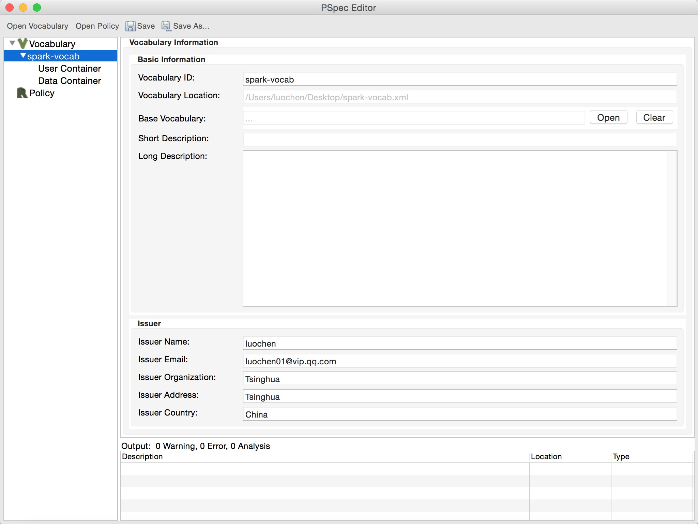

A vocabulary mainly defines the user categories and data categories to be regulated. User categories are grouped into a user container, and similarly, data categories are grouped into a data container. Both user categories and data categories are organized into hierarhical structures respectively, i.e., a category may have one parent category. This represents the natural hierarhical relationships among user roles and data elements, for example, senior analyst can be viewed as a descedant of general analyst, and pii (personal identifiable information) can be modeled as the ancestor of all personal-related information, including name, contact, address and etc.
Besides the containers, a vocabulary has also some other fields, including ID, Base Vocabulary (will be discussed below), Short/Long Description and contact information of the Issuer. These fields can be edited in the vocabulary information view (by clicking the id of the vocabulary in the navigational tree directly) as follows.

A vocabulary can optionally refer an existing vocabulary as its base vocabulary, and the base vocabulary can also refer other vocabulary further. If the base vocabulary is set for a vocabulary, then the policy writer can automatically refer the categories defined by the baes vocabulary. More specifically, when defining user categories in the user container, the policy writer can set the parents of the user categories as the user categories defined in the base vocabulary. The same statement also holds for defining data categories.
However, user/data categories must be unique respectively, which means the vocabulary cannot define the same user/ata category if it has already been defined in the base vocabulary.
For example, suppose vocabularies "vocab" and "base-vocab", where "base-vocab" is the base vocabulary of "vocab". And suppose "base-vocab" contains a user category employee. Then when defining some user category, say analyst, in "vocab", the policy writer can set the parent of analyst as employee. However, the policay writer cannot define a user category named employee again in "vocab" since it has already been defined in "base-vocab".
The effects of base vocabulary over the user container and data container will be further discussed in sections user container and data container respectively.